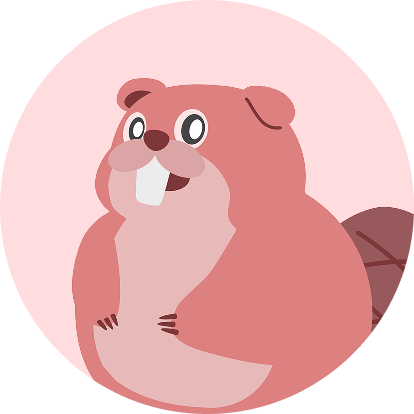
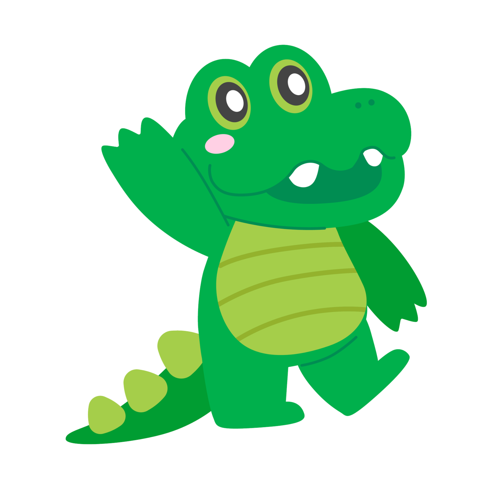
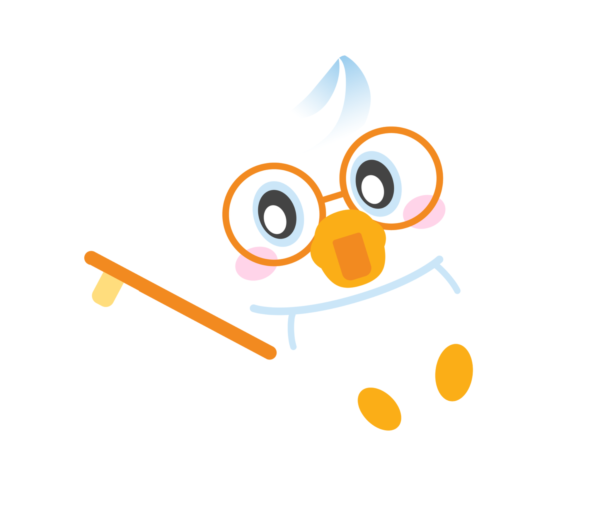
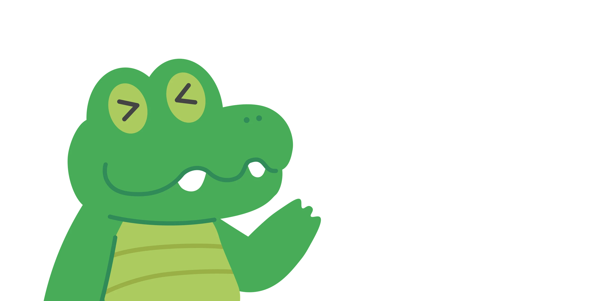
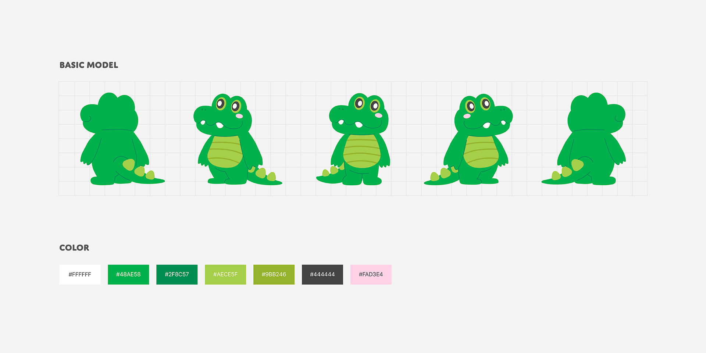
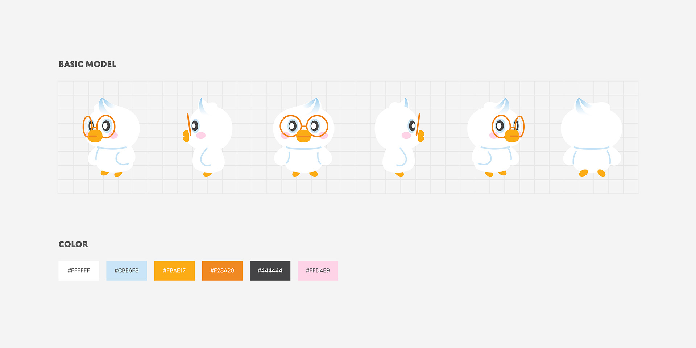
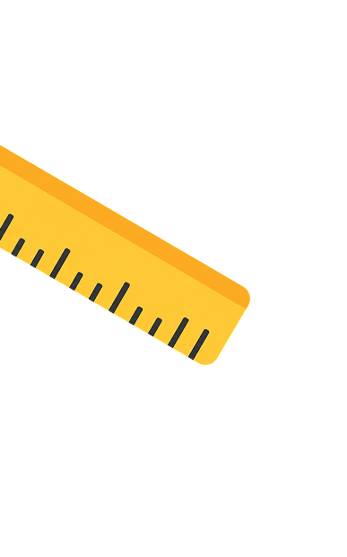
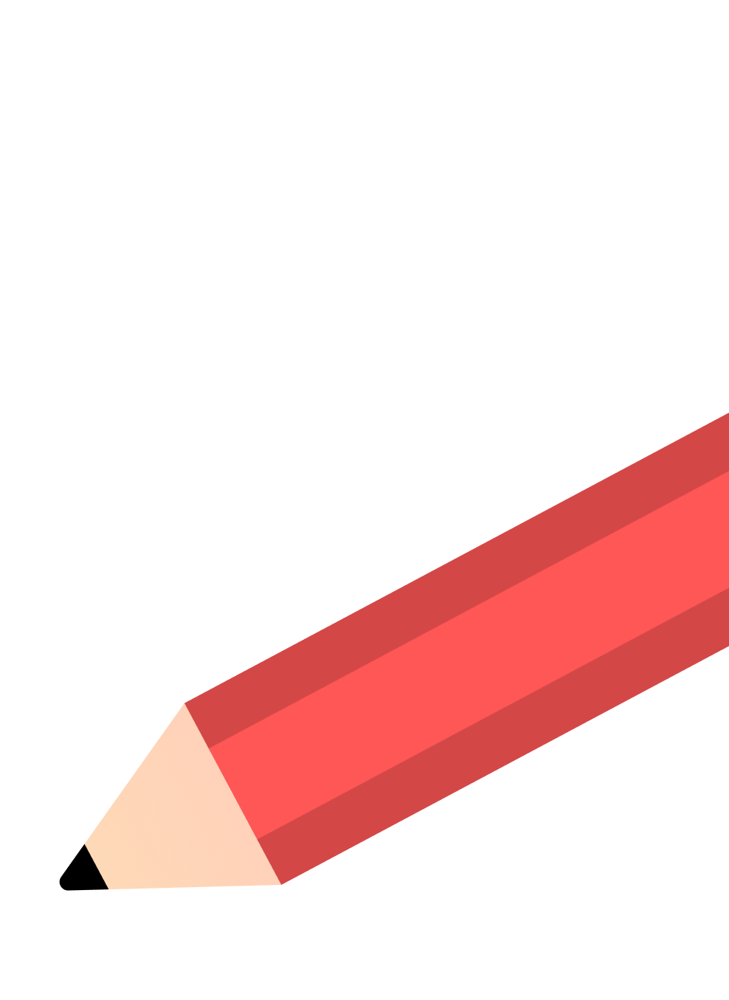
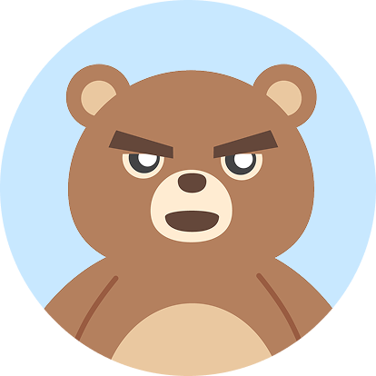
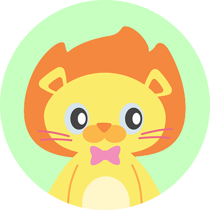

SCROLL DOWN
양치별을 지키는 수호대원
반짝이는 양치별을 지키기 위해 용감한 아푸와 똑똑한 치카가 출동해요
올바른 양치 방법을 쉽고 재미있게 알려주는 든든한 양치수호대예요

용감한 양치별의 리더아푸
아푸는 든든한 양치수호대의 대장이에요.
마을에 문제가 생기면 가장 먼저 친구들에게 달려가고,
함께 힘을 모아 문제를 씩씩하게 해결해 나가요.친구들에게 용기와 자신감을 주는 믿음직한 리더예요.

똑똑한 양치별 박사님치카
치카는 양치별의 똑똑한 박사님이에요.
이가 왜 아픈지, 양치질을 어떻게 해야 하는지어려운 것도 쉽고 재미있게 설명해줘요.
올바른 양치 방법을 차근차근 알려주는 친구예요.



양치별 친구들


아푸치카와